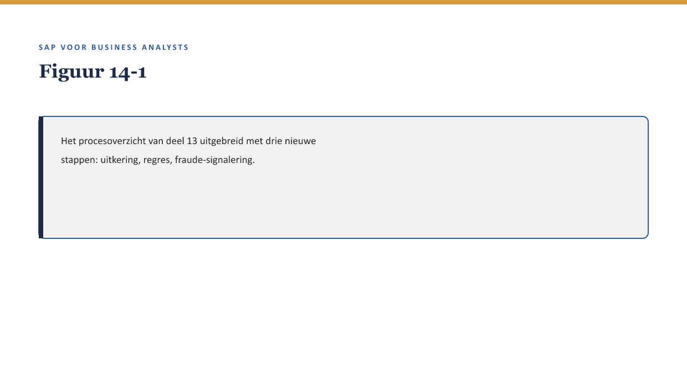
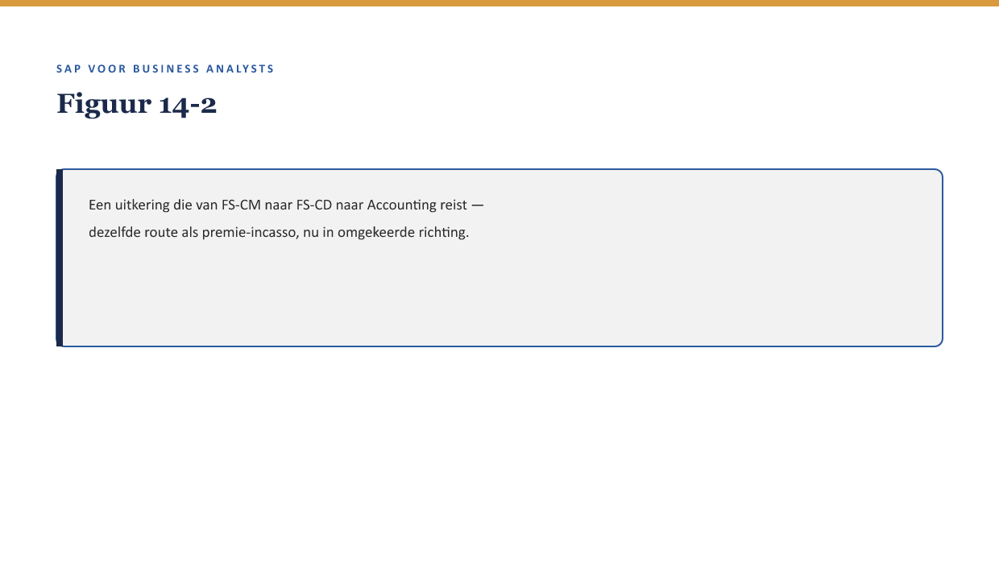

Deel 14 — FS-CM: het schadeproces II
Slidedeck · Niveau 2 Professional · Cursus SAP voor Business Analysts · Ductus
Slidetypen: titleSlide, sectionSlide, bulletsSlide, statementSlide, quoteSlide, tableSlide, figureSlide, opdrachtSlide.
Slide 1 — titleSlide
FS-CM: het schadeproces II Deel 14 · Niveau 2 Professional · Cursus SAP voor Business Analysts
Slide 2 — quoteSlide
“Wat een verzekeraar daadwerkelijk onderscheidt van een verzekeraar op papier, gebeurt hierna.” — Youssef Amrani
Slide 3 — figureSlide

Slide 4 — bulletsSlide
Wat we vandaag doen
- Uitkering: de route via FS-CD naar Accounting
- Regres: terugvorderen bij een derde
- Fraude-signalering op BA-niveau
- Het volledige proces in één plaat
Slide 5 — sectionSlide
Uitkering
Slide 6 — figureSlide

Slide 7 — quoteSlide
FS-CD verwerkt zowel geld dat binnenkomt als geld dat uitgaat — hetzelfde mechanisme, twee richtingen. — Kernzin, reader §3
Slide 8 — sectionSlide
Regres
Slide 9 — opdrachtSlide
Opdracht 14.2 — Regres of geen regres?
Twee situaties — is regres mogelijk?
Slide 10 — sectionSlide
Fraude-signalering
Slide 11 — statementSlide
Signaleren, niet beoordelen.
Waar ligt die grens precies?
Slide 12 — quoteSlide
Fraude-signalering is een plek waar de BA de organisatievraag stelt en specialisten de uitvoeringsvraag beantwoorden. — Kernzin, reader §5.2
Slide 13 — opdrachtSlide
Opdracht 14.3 — Signaleren, niet beoordelen
Formuleer een functionele signaleringseis, geen oordeelscriterium.
Slide 14 — figureSlide

Slide 15 — opdrachtSlide
Opdracht 14.4 — Het volledige proces tekenen
Van melding tot uitkering, inclusief de fraude-signaleringslaag.
Slide 16 — bulletsSlide
Samenvatting in vijf zinnen
- Uitkering loopt via FS-CD naar Accounting, dezelfde route als premie-incasso, omgekeerd
- Regres is een apart, vaak later proces om geld terug te vorderen bij een derde
- Fraude-signalering: de BA formuleert het signaal, niet het oordeel
- Fraude-signalering is een doorlopende laag, geen losse processtap
- Dit procesoverzicht is het fundament voor de end-to-end analyse in deel 20
Slide 17 — titleSlide
Volgende deel De financiële schaduw van elk proces Deel 15